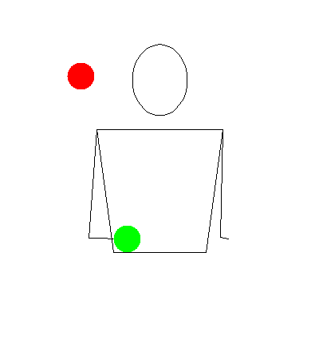

These are recommended tricks to learn before you do this one. It may help.
Tutorial

You will notice that 2 balls go in one hand. This is the basic concept behind the trick. Instead of going in a circular pattern, they just go up and down.
The middle ball is thrown on one beat, and the two outside balls are thrown on the other beat. This means that one of the hands only controls one ball.
Tips
How you handle the middle ball is variable. It can swap which hand throws it. It could be thrown outside each time to make a new trick.